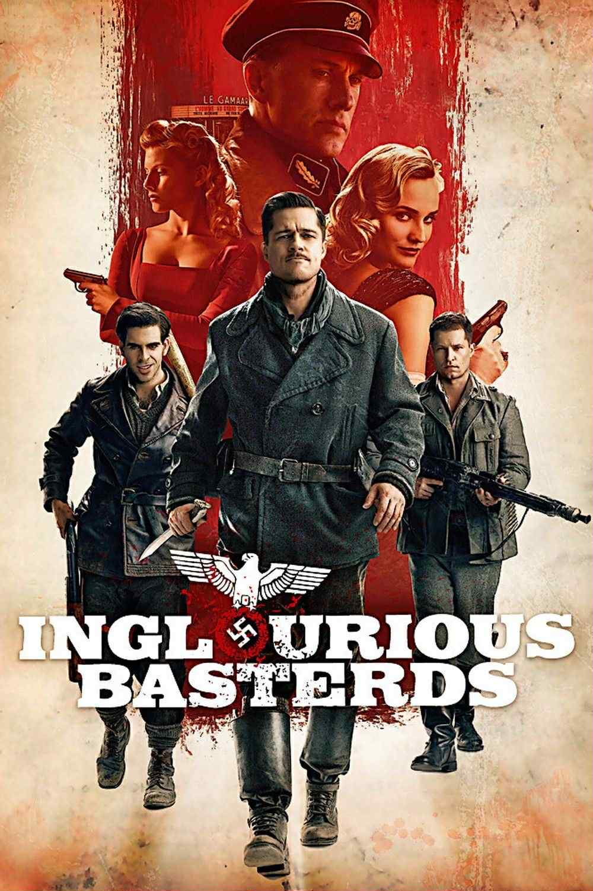

Inglourious Basterds
კვენტინ ტარანტინოს ერთ-ერთი ყველაზე თამამი და სტილიზებული ფილმი, რომელიც ნაცისტური გერმანიის წინააღმდეგ ბრძოლაში უსაზღვრო შურისძიების ისტორიას გვიყვება. ფილმში შესანიშნავად არის შერწყმული ისტორიული პაროდია, სიურრეალისტური ძალადობა და უჩვეულო იუმორი.